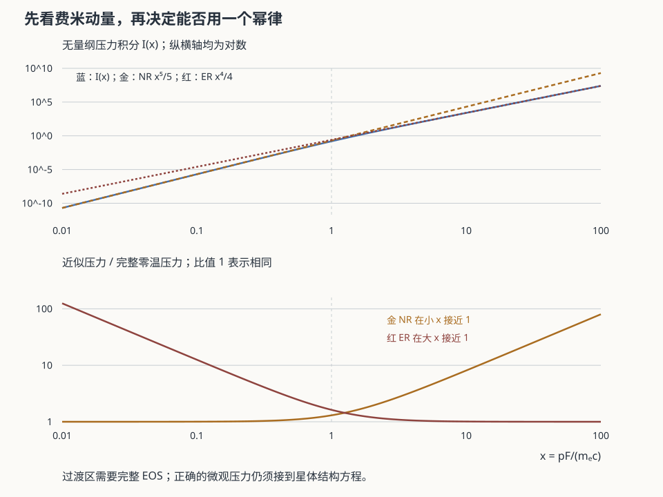

本页目录
天体 IV · 致密天体与简并压
对标：Shapiro & Teukolsky《Black Holes, White Dwarfs and Neutron Stars》/ Glendenning ｜ 前置：sm-03（量子统计）、gr-02（Schwarzschild）、ap-02 恒星死后剩下什么，取决于量子简并压能否顶住引力。本页是本站几条线索最集中的一次汇合：费米统计（sm-03）+ 广义相对论（gr-02）+ 核物理（atom-01）共同决定了一个天体的命运。
学习层：把“简并压”拆成标度、结构与边界
1. 具体开场：同一个压强词，三种物理不能拼成一锅
先看三个相互衔接但不互相替代的模型：
| 对象 | 当前支撑/判据 | 先预测 |
|---|---|---|
| 白矮星 | 电子费米海的简并压 | \(n_e\) 加倍时，非相对论 \(P\) 的幂指数是多少？质量增大时 \(R\) 向哪边走？ |
| 中子星 | 中子/核物质状态方程进入 TOV | 与牛顿估计相比，\(P/c^2\) 和 \(1-2Gm/(rc^2)\) 会让梯度变大还是变小？EOS 变硬会不会改变 toy 最大质量？ |
| 黑洞 | 几何边界 \(R\le r_s=2GM/c^2\) | 进入 \(r_s\) 后，能否继续把“简并压支撑的静态星体”当作同一个模型？ |
实验先收下四项预测，再打开同屏质量—半径图和账本。切换对象时，电子简并、核物质 EOS/TOV、黑洞几何会保持独立标签；这不是界面上的三个名字，而是三个不同的模型边界。
2. 形式桥：从费米动量到 Chandrasekhar 阶数量级
对白矮星用平均每电子重子数 \(\mu_e\)，有
定义 \(x=p_F/(m_ec)\)：\(x\ll1\) 是非相对论电子，\(x\gg1\) 是极端相对论电子。对应的尺度为
把平均引力压只作为 \(P_G\sim GM^2/R^4\) 的尺度估计：
- \(P_{\rm NR}\sim P_G\) 给出 \(R_{\rm NR}\propto \mu_e^{-5/3}M^{-1/3}\)，即白矮星 toy 的质量越大、半径越小；
- \(P_{\rm ER}\sim P_G\) 时双方同为 \(R^{-4}\)，半径消失，留下 \(M_{\rm Ch}\propto\mu_e^{-2}\)。把 Lane–Emden 几何系数压进“阶数量级 toy”可写成 \(M_{\rm Ch}\approx5.83\,\mu_e^{-2}M_\odot\)，\(\mu_e=2\) 时约 \(1.46M_\odot\)；这不是把完整恒星结构精确求完。
互动模型还显示 \(P_{\rm NR}/P_G\)、\(P_{\rm ER}/P_G\) 和 \(x\)。它们是标度诊断：没有解球对称结构方程、温度、旋转、磁场或真实组成梯度，所以不能读取成观测质量—半径拟合。
3. 结构桥：中子星必须换支撑机制并进入 TOV
电子被压入质子后，物质支撑不是“更小的白矮星”，而是核物质状态方程和中子相关的微观压力。静态球对称结构的 TOV 方程写成
本实验用 \(P_{\rm EOS}=P_0(\rho/\rho_0)^\Gamma\) 作为透明 toy EOS；先在径向网格上数值积分给定的 \(\rho(r)\) 形状并归一化，使 \(m(R)=M\)，所以账本中的 \(m(r)\) 与 \(\rho(r)\) 由 \(dm/dr=4\pi r^2\rho\) 同一条积分构造。实验只在一个中点和几个半径分数上评估 TOV 压力梯度：\(\rho+P/c^2\) 是压强的引力质量修正，\(m+4\pi r^3P/c^2\) 是内部压力的质量修正，分母是紧致度修正；它没有继续积分 \(dP/dr\) 成为完整恒星解。真实最大质量不是由这个二参数幂律单独决定；EOS 软/硬、旋转、温度和相变都会移动边界。
在 \(R\sim10\text{--}12\) km、\(M\sim1.4M_\odot\) 时 \(GM/(Rc^2)\) 已约 \(0.17\)，所以“牛顿多方程 + 一个漂亮半径”不能冒充精密中子星计算。实验把 TOV 修正比、EOS 标签和 toy 最大质量单独显示。
4. 模型边界与常见误读
| 误读 | 边界账 |
|---|---|
| “简并压不依赖温度，所以任何致密星都由同一简并压支撑。” | 电子简并是白矮星支路；中子星要核物质 EOS/TOV；黑洞是 \(R\le r_s\) 的几何边界。 |
| “\(R\propto M^{-1/3}\) 可以一直外推到 \(R=0\)。” | 这只来自非相对论 \(\gamma=5/3\) 的尺度平衡；当 \(x\) 变大，模型跨入 \(\gamma=4/3\) 的质量边界。 |
| “Chandrasekhar 质量就是所有致密天体的质量上限。” | 它是电子简并白矮星的阶数量级；中子星上限依赖核物质 EOS，黑洞没有同一静态星体支撑问题。 |
| “Newtonian polytrope 算出了中子星半径。” | Newtonian polytrope 可作教学标度，不能替代 TOV、真实 EOS、边界条件和旋转。 |
| “半径小于 Schwarzschild 半径只是另一种 EOS。” | \(R\le r_s\) 时应切换到黑洞边界描述；不能继续用静态简并星的压力账本掩盖几何边界。 |
5. 致密简并互动实验
JavaScript 失效时的静态后备账本：先读白矮星 \(\mu_e=2\)、\(M=0.8M_\odot\) 的 toy，再对照独立的中子星和黑洞行。
| 对象/行 | 输入 | ledger 读法 | 边界 |
|---|---|---|---|
| 白矮星质量—半径 toy | \(M=0.8M_\odot,\mu_e=2\) | \(R_{\rm toy}\approx7.0\times10^3(M/M_\odot)^{-1/3}\) km；先看 \(x=p_F/(m_ec)\) 再标 NR/transition/ER | \(M_{\rm Ch}\approx5.83\,\mu_e^{-2}\approx1.46M_\odot\) |
| Chandra 阶数量级 | \(\gamma=4/3\) | \(P_{\rm ER}\propto M^{4/3}R^{-4}\) 与 \(P_G\propto M^2R^{-4}\) 比较，\(R\) 消去 | 超过该 toy 质量后需坍缩/爆发等新模型 |
| 中子星 TOV toy | \(M=1.4M_\odot,R=12\) km，软/硬 EOS 二选一 | 归一化 \(\rho(r),m(r)\) 使 \(dm/dr=4\pi r^2\rho\)，再记录 \(GM/(Rc^2)\)、TOV/牛顿梯度比、\(1-2Gm/(rc^2)\)、EOS \(P(\rho)\) | 最大质量是 EOS 边界，不是 \(M_{\rm Ch}\) |
| 黑洞边界 | \(M=10M_\odot,R=20\) km | \(r_s\approx29.5\) km，故 \(R<r_s\)；不再显示静态简并支撑 | 几何黑洞边界 |
图中的蓝色曲线只是白矮星 \(R\propto M^{-1/3}\) toy，绿色是中子星半径的示意 EOS 支路，红色虚线是 \(r_s(M)\)，金点是当前模型。它们用于比较尺度和边界，不是同一条连续物态曲线，也不是观测拟合。
6. 迁移问题
给任意致密对象做计算接口时，至少要保留 supportMechanism、equationOfState、compactness、schwarzschildRadius 和 validity 字段。若只输出一个“压力足够大”布尔值，电子简并、核物质刚度和黑洞几何会被错误合并，最终连模型失败的原因都无法追溯。

1. 简并压：不依赖温度的压强
Pauli 原理（sm-03）：费米子填满动量空间至 \(p_F\)，
非相对论（\(p_F\ll mc\)）：\(P \propto n^{5/3}\)，多方指数 \(\gamma=5/3\)； 极端相对论（\(p_F\gg mc\)）：\(P \propto n^{4/3}\)，\(\gamma=4/3\)。
关键在于 \(P\) 与 \(T\) 无关——这就是 ap-02 说的"简并核心失去负反馈"的根源：能量注入不再引起膨胀降温，于是热失控（氦闪、Ia 超新星）。
2. 白矮星与 Chandrasekhar 极限
电子简并压支撑的教学 toy，质量—半径关系（非相对论）：
质量越大，半径越小——与日常直觉相反，且预示了灾难。
Chandrasekhar 极限【标度推导】：把简并压（\(\gamma=4/3\) 时 \(P\propto M^{4/3}/R^4\)）与引力压（\(\propto M^2/R^4\)）比较——两者对 \(R\) 的依赖完全相同 → \(R\) 消失，只剩一个临界质量：
这是一个纯粹由 \(\hbar\)、\(c\)、\(G\)、\(m_p\) 组合出的质量：
基本常数与组成参数 \(\mu_e\) 共同给出了一个天体质量尺度；\(\mu_e^{-2}\) 不是可省略的装饰因子——本站最漂亮的量纲结果之一。
观测后果——Ia 型超新星：白矮星吸积达到极限时碳爆轰。由于爆发条件近乎固定，峰值光度高度一致 → 标准烛光 → 用于测距 → 1998 年发现宇宙加速膨胀（cosmo-01 的暗能量）。一个量子统计的极限，成了宇宙学的标尺。
3. 中子星
超过电子简并白矮星的 \(M_{\rm Ch}\) 阶数量级后，核心继续坍缩，电子被压进质子（\(e^-+p\to n+\nu_e\)，逆 β 衰变）→ 支撑机制切换到核物质 EOS/TOV；这不是把白矮星电子简并支路延伸到更小半径。
尺度：\(M\sim1.4M_\odot\)，\(R\sim10\) km，\(\rho\sim10^{17}\ \mathrm{kg/m^3}\)（超过原子核密度）。
必须用广义相对论：\(GM/Rc^2\sim0.2\)，牛顿力学失效。静态球对称的结构方程是 TOV 方程：
注意压强本身也产生引力（\(P/c^2\) 项）——在广义相对论中，压强不能无限地帮你抵抗引力，它反而加剧了引力。这是黑洞不可避免的深层原因之一。
质量上限：依赖核物质状态方程（强相互作用，至今不能从第一性原理算准）【前沿/未定】。观测上已发现约 \(2M_\odot\) 的脉冲星，这排除了过软的状态方程；GW170817 的潮汐形变测量则给出了上限约束。中子星因此成为核物质物态的天然实验室——地面加速器不能直接制备并长期维持与中子星内部相同的冷平衡、富中子致密物质；加速器实验可以约束相关核物质性质，但不等同于静态星体内部。
脉冲星：强磁场（\(10^8\)–\(10^{15}\) G）快速旋转的中子星，射电束扫过地球形成脉冲。自转极稳定，可与原子钟媲美，用于引力波探测（脉冲星测时阵）与广义相对论检验（Hulse–Taylor 双脉冲星的轨道衰减，间接证实引力波，gr-03）。
4. 黑洞
若无任何压强能顶住，坍缩至 Schwarzschild 半径之内（gr-02）：
无毛定理：稳态黑洞只由质量、角动量、电荷描述。
观测证据链（本页的诚实清单）：
- 恒星级：X 射线双星的质量函数超过中子星上限；引力波并合事件（gr-03）直接给出质量与自旋；
- 超大质量：银心 Sgr A* 的恒星轨道监测（获诺奖）给出 \(4\times10^6M_\odot\) 集中在极小体积内；
- 事件视界望远镜成像 M87* 与 Sgr A* 的"阴影"，与广义相对论预言的尺寸一致。
Hawking 辐射【理论，未观测】：\(T_H = \dfrac{\hbar c^3}{8\pi GMk_B}\)。恒星级黑洞的 \(T_H\sim10^{-8}\) K，远低于 CMB 温度（2.7 K），故实际在吸收而非蒸发。信息佯谬至今是量子引力的核心问题（qft 线与 gr 线的交界，本站第三档边界）。
5. 练习与要点
例 1（白矮星密度） \(M=M_\odot\)、\(R\sim R_\oplus\)：\(\rho\sim10^9\ \mathrm{kg/m^3}\)——一茶匙约一吨。中子星再高八个数量级：一茶匙约十亿吨。
例 2（为什么 \(R\propto M^{-1/3}\)） 简并压 \(\propto n^{5/3}\propto (M/R^3)^{5/3}\)，引力压 \(\propto M^2/R^4\)，令二者相等即得。质量增加时必须靠缩小半径来提高简并压——直到相对论效应使这条路走不通。
例 3（中子星的自转） 半径从 \(10^6\) km 缩到 10 km，角动量守恒使自转周期缩短约 \(10^{10}\) 倍——这就是毫秒脉冲星的来历（🔗 mech-01 角动量守恒的极端体现）。\(\blacksquare\)
下一页：致密天体不只是尸体，它们是宇宙中最明亮的引擎——吸积把引力势能变成辐射，效率远超核聚变。